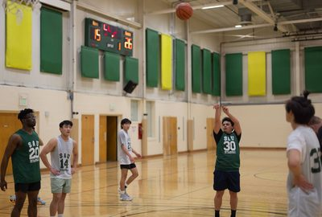
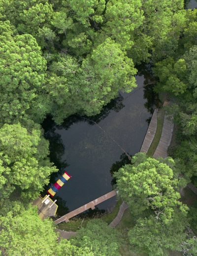
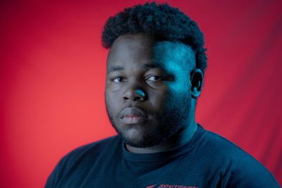

Orlando, Florida Live production Photo Video
Stories from the sideline to the edit suite.
I direct live shows, shoot with intention, and shape each edit around the story it needs to tell.
Showreel
A few seconds of everything.
Camera, edit, and direction by Kenneth Salmon.
If the player does not load, watch the reel on YouTube.
3.5M+subscribers on Doctorly, where I edited videos
2weekly worship services at Forest Lake Church
15,000+viewers reached by the Hope Channel broadcast I directed
2019shooting and editing since
01
Selected work
Photography and video. Every frame shot or cut by me.



Images trade places every five seconds. Pause them by hovering over the gallery.
See all photography
Experience with
- Doctorly
- DermCollective
- Hope Channel
- It Is Written
- Camp Kulaqua
- Forest Lake Church
- Southern Adventist University
Have something in mind?
Let's make it happen.
Tell me what you're making, where it happens, and when you need it.